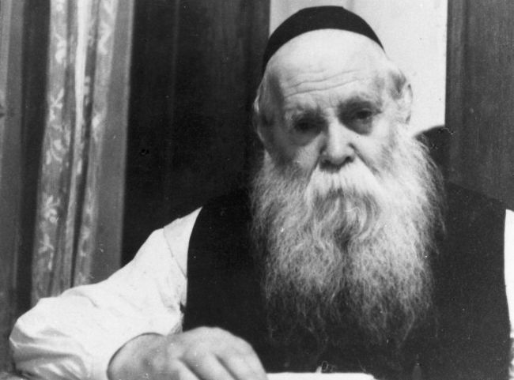

The Father of Them All
In Brunoy, he was the “father of them all.” Anash and T’mimim would consult with him about their problems. They knew he had no ulterior motives or agenda. He was involved in all decisions regarding the yeshiva, and in meetings of the hanhala he was looked to as the main voice. Everyone respected R’ Yisroel Noach Blinitzky’s opinion since they knew he was a man of truth. * As a follow-up to the previous article about R’ Yisroel Noach, the following was taken from a t’shura given out at the wedding of R’ Yoel Blinitzky.

A brief review: R’ Yisroel Noach Blinitzky, known as Yisroel Noach HaGadol, was born in Nissan 5643. He learned in Yeshivas Tomchei T’mimim in Lubavitch. He ran the secret yeshiva in Kremenchug in the Ukraine, one of the main branches of the yeshiva in those days. During the war, he escaped with his family to Samarkand where he was a mashpia figure. During the war years, he opened his home and hosted Jewish refugees. After the war, he escaped Russia with his family and arrived in France where he was appointed by the Rebbe Rayatz to work in the yeshiva in Brunoy. He served in this position for thirty-five years and worked devotedly while being a role model for the talmidim of the yeshiva. It should be noted that the bookkeeping work he did for the yeshiva was done without remuneration.
R’ Yaakov Goldberg: “When he stayed in Brunoy, he would sleep in our house in my bed (my father was very grateful to him because thanks to R’ Yisroel Noach, he remained in Lubavitch), while I would sleep on a row of chairs covered with a blanket.”
In 1947, the Rebbe Rayatz told him not to move to the United States but to try to immigrate to Eretz Yisroel.
But once the Rebbe appointed him as a member of the vaad ruchni and gashmi of the yeshiva, the idea of moving was canceled.
After Yud Shvat 5710, R’ Yisroel Noach continued in his job in yeshiva by request of the new Rebbe. He would periodically ask permission to make aliya, for his sons lived there and he even owned an apartment in Kfar Chabad, but the Rebbe preferred that he remain in the yeshiva. This is one of the letters he received from the Rebbe about this, from 5712:
“I received your letter from Erev Shabbos D’varim in which you write about the state of your health, which is why your wife and you too are thinking of moving to Eretz Yisroel where you have two sons in the kfar.
“In general, I think the reasoning is correct but there is no rush to make aliya and it is out of the question to do so in a Shmita year, in 5712. The main thing is to resolve the question of parnasa in Eretz Yisroel, since there is no supportive Joint there, nor other mosdos, as far as I know, unlike in France. Furthermore, in general you are worthy with Hashem’s help of bringing much benefit to the place where you are, and while you have a profession in France in Yeshivas Tomchei T’mimim, I do not know whether you would find a similar vacancy in Eretz Yisroel.
“Surely you know that many of the askanim there do not serve in a professional capacity in their field of askanus. And even those askanim that do operate there even now, it is connected with arguments and politics to a greater extent than abroad … May Hashem give you the right idea to decide what is good for you and your wife, both materially and spiritually.”
HOW THE RECORDING OF HIS DAVENING WAS MADE
Preparations for davening were important to him above all else. Even when he was weak and needed help getting dressed, he did not concede on going to the mikva before davening every morning.
He was very particular about davening with a minyan and he arrived every day at yeshiva for Shacharis and donned t’fillin with which he only read the Shma (in order to recite it on time). During the davening, he was the mashgiach over the bachurim to ensure that they davened as they should.
When the davening was over, he would go to his room where he continued learning Chassidus. He would then put on a different pair of t’fillin, so he could recite another bracha over the t’fillin without any halachic question. He spent hours davening every morning, stopping now and then to sing a niggun and then he would continue and cry.
The recording of his davening mentioned previously happened as follows, as recounted by his grandson, R’ Chaim Avrohom of Kfar Chabad:
“I learned in Brunoy for two years and I spent a lot of time with my grandfather. I greatly desired having a recording of his unique t’filla but I knew that he would not allow it so I thought of ways I could do it without his realizing it. A short while before I arrived in France, I had bought a tape recorder which was much bigger than the recording devices we have now. It wasn’t easy hiding it!
“One day, I got up my courage and brought it into his house and put it under the bed. I waited a few days until I mustered the resolve to go ahead with my plan. At the appointed time, I nervously entered the room where my grandfather would daven and I sat on the bed behind him and made it look as though I had come to fix my torn pants. At an opportune time, I quickly put the tape on one chair and the microphone on another chair behind my grandfather and boruch Hashem, the recording came out fine. Copies of it were given out to family and his talmidim who till today listen to it and are moved.”
R’ YY Pevsner: “I will never forget R’ Yisroel Noach’s davening on Yom Kippur. On Erev Yom Kippur he would arrive at shul with many handkerchiefs to absorb his tears. His seat was at a table near the wall, and with his tallis covering his head he would daven and sob loudly. He remained there all of Yom Kippur. His cries would inspire a unique atmosphere in the yeshiva.”
When he counted the Omer, he would get excited each time anew. “As children,” said R’ YY Goldberg, rosh yeshiva of Tomchei T’mimim in Migdal HaEmek, “we would stand next to him during the counting of the Omer and watch how a distinguished, elderly Chassid, when reaching the ‘Ribbono shel Olam’ became so excited.”
So too when he read the Haftora. He read it with a melody of d’veikus and feeling and he always cried as he read it.
R’ Shneur Zalman Labkowski, rosh yeshiva in 770: “Toward the end of Shmini Atzeres, it is customary to part from the sukka. R’ Yisroel Noach would eat something, and then dance joyously. Then he would climb up and kiss the s’chach out of his great excitement, even though he knew it is not our custom to kiss the s’chach (I even told him this once). In any case, he did it and he explained that in his great excitement he could not stop himself from kissing the s’chach.”
A WARM CHASSIDIC HEART
R’ Yisroel Noach had a big heart. He truly rejoiced in someone else’s simcha as though it was his own, and the opposite too, G-d forbid, he would share in another’s sorrow.
R’ YY Gurevitch relates: “My uncle, R’ Hillel Azimov, learned in Tomchei T’mimim in Kremenchug which R’ Yisroel Noach ran. One Yud-Tes Kislev, R’ Itche der Masmid came and farbrenged with the bachurim until late at night and in the morning they did not get up for s’darim.
“As a punishment, the maggid shiur (whose name I don’t remember) did not give shiurim for several days. When R’ Yisroel Noach found out, he called the bachurim to his office. He looked up from the documents he was reading, removed his glasses and put them on the desk, and then raised his hands upward and said, ‘What will be with you?’ and burst into tears. When R’ Hillel told this to me, he cried. He was amazed how much R’ Yisroel Noach truly cared about them.”
MEKUSHAR HEART AND SOUL TO OUR REBBEIM
R’ Yisroel Noach was a mekushar to our Rebbeim. When news came of the release of the Rebbe Rayatz, he took a bottle of mashke and ran into the street. This was related by R’ Yosef Goldberg who was a talmid in the yeshiva in Kremenchug at the time.
The talmidim in the yeshiva in Brunoy tell many stories about his outstanding hiskashrus to the Rebbe. Even before the Rebbe accepted the nesius, R’ Yisroel Noach received a long response from the Rebbe which the T’mimim studied in depth. In the letter which he sent and was addressed to the Rebbe Rayatz, R’ Yisroel Noach asked deep questions on the topic of g’vul, bli g’vul, and hashgacha pratis. This is the answer he received:
I gave your letter with questions in Chassidus to my son-in-law, R’ Menachem Mendel, to look into your questions and arrange the responses as he sees fit. It is now some time since he showed me his detailed response in all the matters of your questions, and I have no doubt that they will study his response in the depth that it deserves.
Enclosed was the response of the Rebbe, which was later printed in the Igros Kodesh volume 2, p. 392 and takes up six pages. It was addressed to R’ Yisroel Noach but was publicized among the talmidim of the yeshiva. R’ Sholom Dovber Butman tells in his memoirs as a talmid in the yeshiva in Brunoy that the talmidim copied the letter to learn it.
OBVIOUSLY, THE REBBE IS MOSHIACH
R’ Nissan Nemanov went to the Rebbe for Yud Shvat 5730, so the bachurim in Brunoy farbrenged with R’ Yisroel Noach. Usually, at farbrengens in yeshiva, R’ Nissan would farbreng and R’ Yisroel Noach would just listen. This time, he agreed to say a few words which everyone listened to eagerly.
One of the things that was said reverberated among the talmidim of the yeshiva of that time, i.e., why, when the Rebbe mentions the Rebbe Rayatz in his sichos, does he say, “the Rebbe, my father-in-law,” when the Rebbe is our Rebbe and it is not necessary to say “the Rebbe, my father-in-law.” He said that this was done by the Rebbe Rayatz too, in connection with his father, but afterward it stopped, and so too with the Rebbe, twenty years later (5710-5730), surely it should be the same.
R’ YY Gurevitch says that he spoke then about the Torah scroll of Moshiach and the hisgalus of the Rebbe, the hot topic that was being discussed by Chabad Chassidim all over the world before Yud Shvat 5730. However, by R’ Yisroel Noach, said R’ Gurevitch, it was always obvious that the Rebbe is Moshiach and is going to be revealed as such.
R’ Yisroel Noach never traveled to see the Rebbe. Some attribute it to his age and weakness. But his longing and his great hiskashrus to the Rebbe was obvious to all.
R’ Shneur Zalman Labkowski, who was a talmid in Brunoy in those years, says: “Every so often he would be inspired to go to the Rebbe, but when it came down to actually going, he did not go and I do not know why … After I returned from the Rebbe in 5724, he asked me to tell him everything I heard, the sichos and maamarim, and when he heard my review he became excited and he said to me, ‘Zalman, this year I’m going to the Rebbe,’ but it did not materialize.”
Many Chassidim who lived in Paris at that time say that whenever they went to the Rebbe, R’ Yisroel Noach would accompany them with great excitement and when they returned he would interrogate them and demand to know what it was like by the Rebbe, wanting to know details about the sichos and maamarim and even regarding the Rebbe’s health. “He asked not only in general terms but cared very much and wanted the details.”
His grandson, R’ Shlomo Majeski, would occasionally send him letters about the goings-on at Beis Chayeinu. R’ Yisroel Noach’s joy upon receiving them was indescribable. Talmidim of the yeshiva remember how after he received one of these letters, he entered the yeshiva hall excitedly and repeated a line the Rebbe said at a farbrengen.
I ENVY YOU
R’ YY Gurevitch relates: “In 5734, a group of us went on mivtzaim in the south of France, very far from Brunoy, and to rent a ‘tank’ and cover other expenses we needed a lot of money. Having no choice, I went to R’ Yisroel Noach and asked for a loan, thinking that even if he would agree, he would ask for guarantors and who would be willing to be a guarantor for bachurim? However, to my surprise, R’ Yisroel Noach immediately took out the money and gave it to me. He was very happy to help with mivtzaim.”
R’ YY Pevsner relates, “One year, we worked hard to prepare five hundred mishloach manos in R’ Shlomo Chaim’s room (the room that R’ Shlomo Chaim Kesselman lived in for a while), which was next to R’ Yisroel Noach’s room. The Thursday night before Purim, we made a big ruckus, as bachurim do, and his son, R’ Aharon Yosef, came and firmly asked us to stop the noise. We tried to do so but did not succeed for long and R’ Aharon Yosef came again and this time demanded that we stop our preparations in this room. I convinced him that this time we really would be quiet, but within a short time our voices got louder and it was noisy as we worked.
“Friday night, when R’ Yisroel Noach entered the yeshiva, the bachurim who had worked on the mishloach manos tried to hide so he wouldn’t see us. But he noticed me and with a big smile he said: I want to dance with you and all your friends who prepared mishloach manos.
“After we danced for a few minutes, he said, ‘You have the z’chus of being in the Rebbe’s army that is conquering the world. You have the z’chus and I envy you because I cannot take part in this.’”
BITTUL
R’ Shneur Zalman Labkowski explained why R’ Yisroel Noach kept quiet at farbrengens even though he had been the main speaker in Kremenchug and Samarkand: His good heart and Ahavas Yisroel were tremendous, and his humility and bittul were outstanding. Although he was about ten years older than R’ Nissan, he never agreed to farbreng. He would say that R’ Nissan was here and he should farbreng, and he would sit at farbrengens and listen to R’ Nissan.
Because of his great Ahavas Yisroel, he only wanted to hear good about Jews, and when R’ Nissan started speaking somewhat harshly to the talmidim, he would stop him immediately and say, “You need to say good things.”
Every year at the Beis Iyar farbrengen, he would tell how the Rebbe Maharash freed his son, the Rebbe Rashab, from the army. In those days in Russia, the rich could exempt their sons from the army by paying a lot of money. The Rebbe Maharash bought one of these cards for the Rebbe Rashab, but unfortunately, some time later, all the exemption cards were declared invalid. The government then demanded that the Rebbe Rashab be drafted.
A senior officer told the Rebbe Maharash that the moment the Rebbe’s son would go to the army, all the Jews would go, but the Rebbe refused to allow his son to be drafted. Even when the officer requested that he at least wear an army uniform so that Jews would see him and agree to go to the army, the Rebbe did not agree.
Upon hearing the refusal, the officer issued instructions to arrest the Rebbe Rashab and forcibly induct him. The Rebbe Maharash saw that the worst was about to happen and told his son to flee. The Rebbe Rashab ran away and a while later he received a letter from his father, but since the letter arrived before he had davened, he opened it only after he davened. Although it was a letter from the Rebbe, his father, which might contain instructions for him, he did iskafia (practiced self-restraint), and waited to open it until after davening.
After a while, the Rebbe Maharash decided that before he traveled to Petersburg he would go to the officer. He went with two Chassidim and when he entered, the officer greatly honored him and stood up for him. But he immediately began speaking harshly and did not agree to release the Rebbe Rashab.
The Rebbe Maharash turned to the two Chassidim and said, “He has no respect for Torah at all,” and then he turned to the commander and said, “You will yet remember me.”
Some time afterward, the officer began suffering terribly and felt his end was near. Since he was a religious man, he knew that if he had problems in this world, he would have problems in the next world too. He sent a request to the Rebbe Maharash that at least he shouldn’t suffer from this up above. After he died, the Rebbe Maharash arranged that his son not go to the army.
R’ Yisroel Noach would shed light on the story: Why did the Rebbe Maharash not want his son to put on the army uniform for a brief time which resulted in his son having to flee and then a miracle had to be done which killed the officer?
He explained: The Rebbe Maharash knew that the Rebbe Rashab had to write Hemshech 5666 where it talks all about the inyan of an eved – a loyal slave, a simple slave, so he could not have even the slightest yoke of a human being upon him.
R’ Zalman concluded: Even before telling this story, R’ Yisroel Noach asked R’ Nissan permission, to that extent was his bittul to R’ Nissan. R’ Nissan was the mashpia and therefore, only he farbrenged and he had to be respected, so that we young talmidim would see that R’ Yisroel Noach honored him and we would too.
***
In the Paris-Brunoy area lived a gentile nurse who gave R’ Yisroel Noach an injection every day, but did not charge for it. Afterward, she would go to one of the wives of the Chassidim in Brunoy and would give her an injection as well but would charge for it. The woman once asked the nurse why she had to pay while R’ Yisroel Noach did not, and the nurse said because R’ Yisroel Noach is an angel.
It happened that the hanhala of the yeshiva decided to expel a bachur. R’ Yisroel Noach met him wandering around outside, called him over, and sat and talked to him with a pleasant countenance until he succeeded in getting the boy back on track and had him accepted back in yeshiva.
The Rebbe Rayatz testified to R’ Yisroel Noach’s good heart in a letter that he sent to a Chassid who claimed that R’ Yisroel Noach insulted him (Igros Kodesh vol. 15, p. 310):
“I have no doubt that my friend knows good and well that R’ Yisroel Noach loves him and seeks his material welfare really and truly, and is not at all shayach to wanting to cause harm to anyone, whomsoever it may be.”
TORAH STUDY
As mentioned previously, R’ Yisroel Noach learned Shas and Mishnayos for many hours each day, and as R’ YY Gurevitch related, “Every time I entered his room, he would be busy learning Mishnayos.” R’ Shneur Zalman Labkowski said that even during their escape from the Soviet Union via Lvov, he did not forgo learning Mishnayos every day.
His brother, R’ Yisroel Labkowski, said: “R’ Yisroel Noach told me that he made a commitment when he married to learn Mishnayos every day and he did not remember even one day that he did not learn Mishnayos. His learning was l’ilui nishmas his father-in-law, the Chassid, Itche Dissner. R’ Yisroel Noach once asked the Rebbe whether he could learn Mishnayos for two people, for his father-in-law and for a relative of a wealthy man who was a donor to the yeshiva and the Rebbe said yes.
At the end of his life he wanted to know whether, from Mishnayos that he learned as a z’chus for others, a z’chus remained for him too. He asked the Rebbe and the answer from 22 Sivan 5734 said: I received your letter in which you ask whether a z’chus remains for you from the chapters of Mishnayos that you learn for someone’s neshama. I am happy to inform you that the Rebbe ruled that certainly [and the word “certainly” was added in the Rebbe’s handwriting] you have the z’chus of the Mishnayos mentioned previously. The letter was signed by the Rebbe’s secretary, R’ Chadakov.
THE REBBE’S BRACHA FOR A LONG LIFE
R’ SZ Labkowski relates: “When R’ Yisroel Noach joined the staff of the yeshiva in Brunoy, he also began serving as gabbai who gives out aliyos. He greatly honored the Leviim and if there were no Kohanim in shul, he called up Leviim instead, because he knew that it says that whoever, ‘When there is no Kohen, honors the Levi’ would live long, and he wanted to live long. Indeed, R’ Yisroel Noach lived a long life.”
R’ Yisroel Noach also received the Rebbe’s bracha for long life. It was in 5712 when he wasn’t yet seventy. The Rebbe wrote him in a letter: “With blessings for long days and good years with all the elucidations.” In a handwritten note, the Rebbe added, “For you and your wife.” He lived another thirty plus years and passed away close to a hundred years old. This bracha came true for his wife as well.
R’ Yisroel Noach’s son, R’ Aharon Yosef, who helped his father throughout his life and received the Rebbe’s bracha for long life for this, passed away on Erev Shabbos, 5 Shvat 5762, at the age of 96.
Rena. "The Father of Them All." Beis Moshiach, no. 1062 (March 22, 2017).